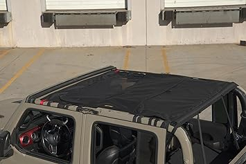
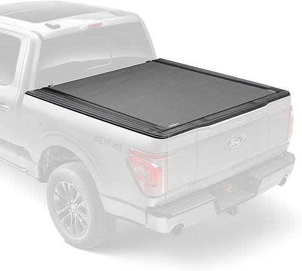
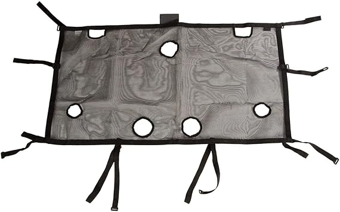
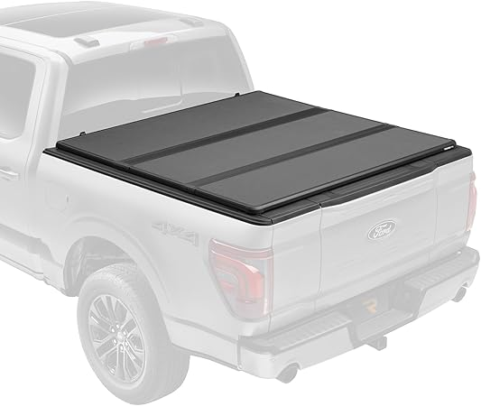

← jttops.com
What We Look For in Jttops (Updated 2026)
May 2026
Whether you're upgrading or buying your first, the right jttops in 2026 comes down to a few factors most buyers overlook.
Lessons from Real Buyers
Trusting fake reviews — Look for reviews with photos and specific details. Generic praise is often planted.
Going with the cheapest option — Budget jttops cut corners. Spending 20% more often gets something that lasts 3x longer.
Overbuying features — Most people use 20% of high-end jttops features. Don't pay for what you'll never touch.
Our Current Favorites

→ #5 — JeCar JL Sunshade Mesh Bikini Top Roof Sun Shade Exterior Accessories Compa — Great value

→ #2 — JOYTUTUS Waterproof Sun Shade Top for Gladiator JT 2020-2026 All-Weather Pr — Highly reviewed

→ #3 — JT Top Sun Shade Roof Compatible with Jeep Gladiator 4 Door 2018 to 2023 Su — Best seller

→ #1 — QuadraTop Acoustic Hardtop Headliner Kit Fits Jeep Wrangler JLU JKU Gladiat — Editor's pick

→ #4 — RT-TCZ Sunshade Mesh Top Cover Roof UV Sun Protection for Jeep Wrangler JLU — Fan favorite
Pro Tips
- Set a firm budget before browsing. It's easy to creep up $50-100 comparing jttops features.
- Between two options? Go with the one that has more reviews. Volume of feedback matters for jttops.
- The 3-star reviews are gold. They're usually the most balanced and honest takes on jttops.
- Set price alerts on your top picks. jttops prices can drop 30-40% without warning.
Where to Focus
- Dimensions matter — Read the actual measurements. "Large" means different things to different jttops manufacturers.
- Brand track record — Established jttops brands have more to lose from bad products. That accountability matters.
- Price trends — jttops prices fluctuate. Track your picks and buy when the price dips.
- Material grade — Higher-grade materials in jttops last longer and perform better, even when designs look similar.
- Availability — In-stock with fast shipping beats a "better" product backordered for weeks.
In Summary
Good jttops don't have to be complicated or expensive. Check our updated picks and buy with confidence.
Affiliate Disclosure: As an Amazon Associate, we earn from qualifying purchases. This doesn't affect our recommendations.